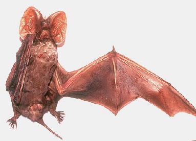
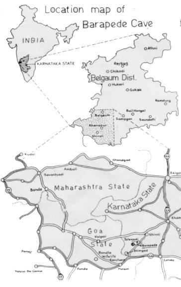

|
Digitized
Inventory of Animal Resources: Mammalia |
Taxonomic
Details
----- Scientific Name
----- Classification
----- Synonyms
----- Common Names
Other
Biological Details
----- Habit and
Habitat
----- Distribution
---------- Extent of
Occurrence
---------- Area of
occurrence
---------- Altitude
---------- Population
-----
Conservation Status
-----
Diagnostic
Features
-----
Breeding system
Miscellaneous
Information
Literature
Scientific Name : Otomops wroughtoni (Thomas)
Classification:
Order: Chiroptera
Suborder: Microchiroptera
Family: Molossidae
Synonyms: Nyctinomus
wroughtoni Thomas, 1913
Common Names: Wroughton's
free tailed bat
Threats:
Extreme Fragmentation of the niche, Human
Interference, Loss of Habitat, ; Effect
of threats on population (Perceived or inferred): Can't say
Trade: No; Parts in
trade: No; Effect of trade
on population (Perceived or inferred): Not declining
The
species is known, even now, from a single place all over the globe. It is apparently
confined to single diurnal biotope which is nothing but a vast natural
calciferous cave on a large plateau rising above the thick forest patches. The
cave in the forested area is almost concealed by trees and tall bushes. There is
a high degree of humidity inside the cave resulting in a different floor floral
components which mostly belong to algae and mosses. The walls are full of
lateral ramifications. The bats are in habit of hiding inside the narrow deep
crack, crevices and hole or cavities in the form of inverted funnels. Not much
information is available about its feeding habits. These bats live in small
groups of varying sizes of 2-15 bats or even more of both sexes per group.
During day time they remain silent and motionless. When disturbed they either
"walk slowly away" or fly within the cave but hardly leave the cave.
Habitat
Structure: Single cave in forested area. There are
permanent water patches and high degree of humidity inside the cave.
Barapede cave, Dist. Belgaum, Karnataka, India
No. of Locations: One ; Type: Contiguous
Extent of Occurrence less
than 10 sq.kms.
Area of occurrence: less
than 10 sq.kms.
Altitude:
800 mts
Population:
Global Population: 75+
(Ramakrishna et. al.,2003); No.
of mature individuals in all the
populations: less than 250
Captive Population: None.
Life span:
(Wild): Not Known.; (Captivity): Not Known.
Population Trend: Stable (Ramakrishna et. al.,2003).
Conservation status: Endemism: Endemic to India; Critically Endangered
CITES APPENDIX: Not Listed; Indian
Wildlife (Protection) Act (1972) (As amended
up
to 2002): Schedule I; Part
I; Indian Red Data Book (IUCN, 1994): Not
Listed; IUCN (1998) (Proposed): Critically
Endangered (National); IUCN (2002) (Proposed): Critically Endangered (Global) based on
Version 2.3(1994) (IUCN, 2003);
Measurements: (In
mm): Head and Body Length: 87-99, Tail Length: 41-50, Hind foot: 10-14, Forearm
Length: 62-67, Ear: 31-34, Greatest Length of the skull: 24.2-25.5,
Condylocanine Length: 21.8-23.2
Weight: Not
Known
Intraspecific variations: No subspecies
Museum Records:
Locality: Barapede
cave, Karnataka, South India.; Year: 1980
and 2002.; Collector: H. R.
Bhat; G.Topal and Ramakrishna (1980) and Ramakrishna and Pradhan (2002).; Number
of examples studied or collected: Total four examples.; Name
of Museum: National Institute of Virology, Pune, and Zoological Survey
of India, WRS, Pune
Taxon related studies recommended: Ex-situ
survey, Monitoring,
Limiting factor research, Habitat management, Conservation strategy recommended,
Public awareness through education etc.


Bates,
P. J. J. & Harrison, D. L. 1997 Bats
of the Indian Subcontinent xiv+268pp. Publisher: Harrison
Zoological Museum, Kent, U.K.
Molur, S.; Marimuthu, G.; Srinivasulu, C.; Mistry, S.; Hutson, A.; Bates, P. J.
J.; Walker, S.; Padma Priya, K. and Binu Priya, A. R. 2002 Status
of South Asian Chiroptera: Conservation Assessment and Management Plan (C.A.M.P.)
Workshop Report viii+154pp. Publisher: Status of South Asian
Chiroptera: Conservation Assessment and Management Plan (C.A.M.P.) Workshop
Report.
Molur, S.; Nameer, P. O. and Walker, S. 1998 Report of the Workshop “ Conservation Assessment and Management plan
for Mammals of India.” (BCPP- Endangered Species Project) 176pp. Publisher: ZooOutreach
Organisation, Conservation Breeding Specialist Group India, Coimbatore, India.
Ramakrishna, Pradhan, M. S. and Sanjay Thakur 2003 Status
Survey of Endangered Species: Wroughton's Free-tailed Bat, Otomops wroughtoni 16pp. Publisher: Director
Zoological Survey of India, Kolkata.